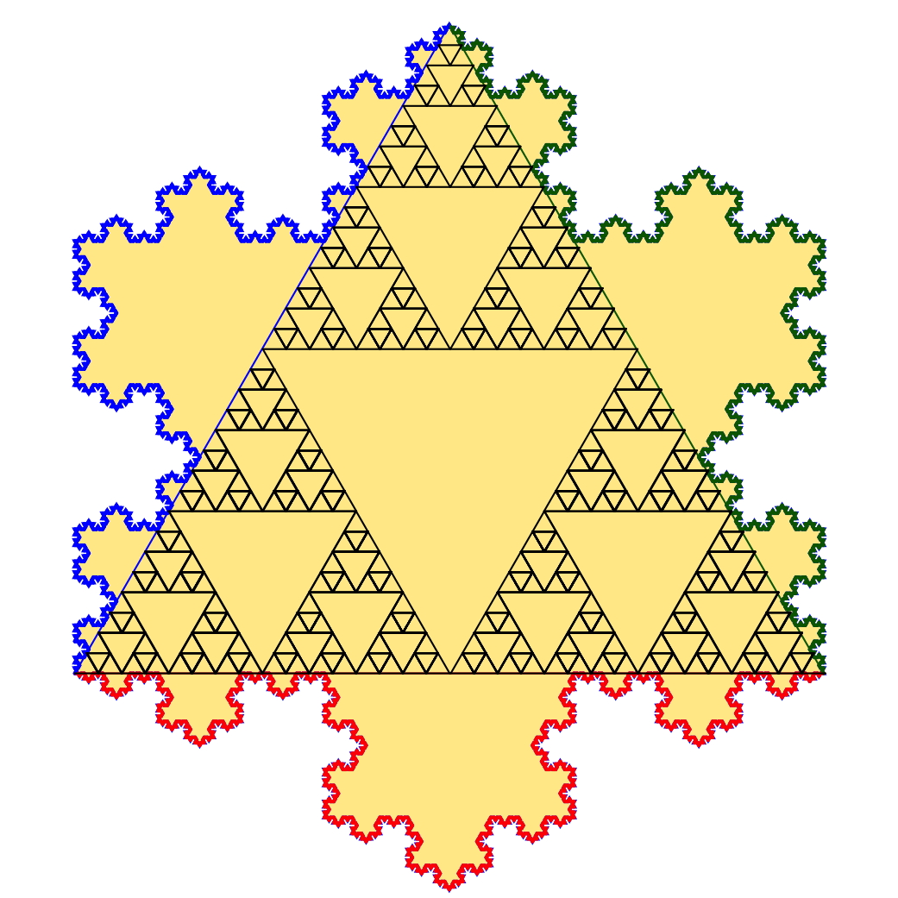
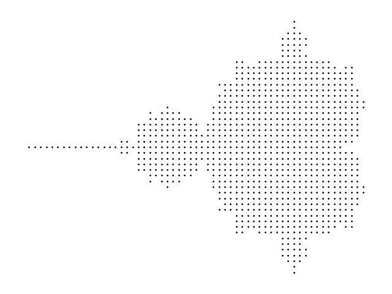

What are fractals, how they work, and some examples.
Fractals are often described as a never-ending pattern. They are infinitely complex, that are self-similar at scale. They are created by repeating 1 simple shape or image over and over again. This simple action can lead to very complex fractals depending on the original shape. Often described as a dynamic system, they center around recursion, something that repeats given a rule (or rule-set). Because of the nature of these fractals, they inhibit behavior not often found else where. For example, because we're repeating the same shape, for 2 times the edge length of the shape there is 4 times has much area created! Also because of the nature of fractals, we can infinitely zoom into them and continue gain detail.
Many people have seen fractals without realizing it, including what is most likely the first fractal to ever be seen by man, the snowflake. Snowflakes are a perfect example of fractals in nature, depending on your luck, some snowflakes looked at microscopically show their complex fractal-like patterns. For a less time sensitive example, we can look at the Koch snowflake .

The Koch snowflake starts simple, with just a single triangle. Then in the next iterations, the triangle is scaled down by 1/3. You do this 3 times, placing each triangle on the original triangle, just on a new side without a smaller triangle on it. Repeating this forever, you'll see it makes a snowflake-like shape! A more mathematic explanation can be found here . Why don't we try making our own fractals using Python ! Using equation z = z^2 + c we can make the famous Mandelbrot Set.
We will be using two libraries to make our fractals,
matplotlib
&
numpy
.
import matplotlib.pyplot as plt
import numpy as np
# Helper Functions
def matrix(
xmin: float | int,
xmax: float | int,
ymin: float | int,
ymax: float | int,
pixel_density: float | int,
) -> np.ndarray:
# Create an array of equally spaced real numbers between xmin and xmax.
# The number of points in this array is determined by pixel_density.
r = np.linspace(xmin, xmax, int((xmax - xmin) * pixel_density))
# Create an array of equally spaced imaginary numbers between ymin and ymax.
# Again, the number of points is determined by pixel_density.
i = np.linspace(ymin, ymax, int((ymax - ymin) * pixel_density))
# Create a complex grid by combining the real and imaginary parts.
# Each point in the grid corresponds to a complex number (r + i*j).
# The result is a 2D array where the rows represent real values (r) and the columns represent imaginary values (i).
complex_grid = r[np.newaxis, :] + i[:, np.newaxis] * 1j
return complex_grid
def stable(c: int, iterations: int) -> bool:
# Initialize a complex number z with a value of 0.
z = 0
# Iterate 'iterations' times.
for _ in range(iterations):
# Update z using the Mandelbrot iteration formula: z = z^2 + c.
z = z ** 2 + c
# Check if the absolute value of z is less than or equal to 2.
# If it is, the point represented by 'c' is considered stable in the Mandelbrot set.
return abs(z) <= 2
def get_mandelbrot_members(c: np.ndarray, iterations: int) -> int:
# Check if the point represented by 'c' is stable within the Mandelbrot set.
m = stable(c, iterations)
# Return the value of 'c' if it's stable (within the set).
return c[m]
def main():
c = matrix(-2, 0.5, -1.5, 1.5, pixel_density=25)
members = get_mandelbrot_members(c, iterations=100)
plt.scatter(members.real, members.imag, s=1, c="black", marker="*")
plt.gca().set_aspect("equal")
plt.axis("off")
plt.tight_layout()
plt.show()
if __name__ == "__main__":
main()
If you're interested in how it works, the comments should explain everything. But lets look at the results of the program!

If you dont want to run python code, here are some fun fractal explorers that you can run in your web browser:
I recommend Fractals.cc, its really fun.
17th Century : The journey of fractals began with notions of recursion. Mathematicians explored recursive processes, laying the groundwork for understanding complex patterns. However, it wasn't until later that the concept of fractals truly took shape.
19th Century : In the 19th century, mathematicians like Bernard Bolzano, Bernhard Riemann, and Karl Weierstrass delved into the study of continuous but not differentiable functions. These functions paved the way for the exploration of fractals. Notably, they worked on mathematical systems that exhibited intricate behavior, even though their derivatives were undefined.
20th Century : The term "fractal" was officially coined by the mathematician Benoit Mandelbrot in 1975. Mandelbrot extended the concept of theoretical fractional dimensions to geometric patterns found in nature. His groundbreaking work revolutionized our understanding of fractals and their applications.
Mandelbrot Set: Perhaps the most famous fractal, the Mandelbrot set, showcases intricate self-similarity. Its boundary forms a complex, infinitely detailed curve. Zooming into the Mandelbrot set reveals mesmerizing structures at various scales.
Fractal Dimension : Unlike conventional dimensions, fractal dimensions are not necessarily integers. They describe how efficiently a fractal fills space. For instance, an infinite fractal curve can wind through space more efficiently than an ordinary line, even though both are topologically 1-dimensional.
Nowhere Differentiable : Many fractals are nowhere differentiable. Analytically, they challenge traditional notions of smoothness. For example, the Sierpinski carpet exhibits self-similarity while being nowhere differentiable.
Fractals are very interesting part of nature & math, and could possibly explain some of the mysteries of the universe!